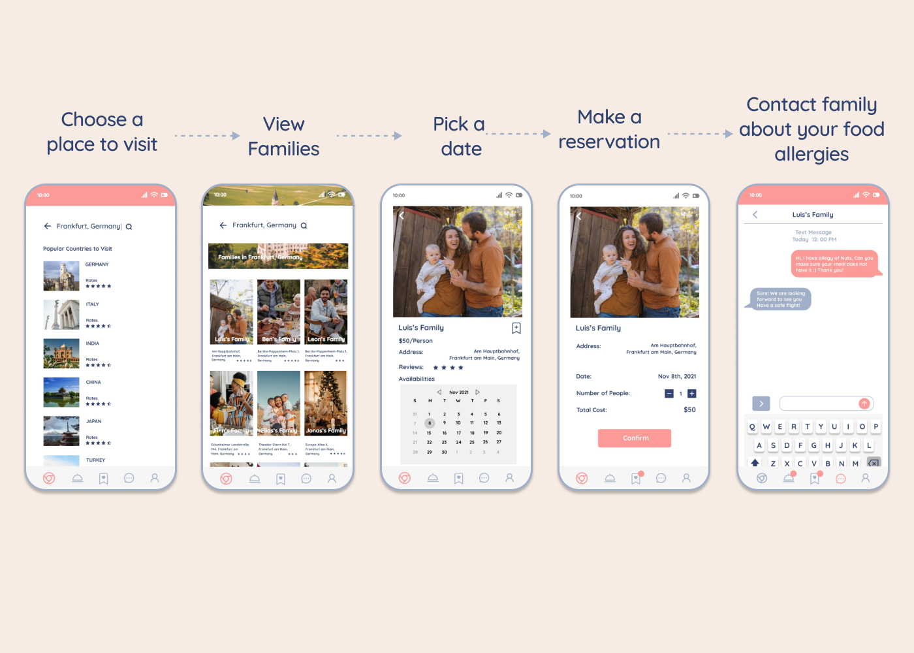

EATATHOME MOBILE APP
There are nearly 1.3 billion international tourists around the world every year. Travelers want to blend into a city or a country by talking to locals and eating authentic food. But who can you talk to? How can you tell if the foods are authentic?
Project Duration: Two Weeks
Project Type: Conceptual, Solo Project
My Role: UX Designer
MARKET INSIGHTS
Recently, I got some complaints from my friends who had encountered unpleasant experiences in a restaurant.
One of them said that "During my trip I was excited to try the local food, I found a famous restaurant but arrived there finding out there was a long line to wait."
One of them said that "During my trip I was able to dine in but found out that the food from that restaurant was not authentic and overpriced."
HOW MIGHT WE pave the road for USERS to have a smooth eating experience while traveling?
MY ASSUMPTION
Who cooks the most authentic food in a city or a country?
What about I create an app that USERS can book a home eating experience in a new city and homes that offers food cooked by local families?
DISCOVERY
To prove my assumption of offering a memorable food-eating experience in a new place by creating a family meal booking app, I created and sent out a survey. Most people think it is a nice idea and will use the app.
I asked questions such as how frequently they travel? Will they eat local food during the trip? Will they make a reservation at a local restaurant beforehand? Share some unpleasant experiences when eating at a local restaurant? Will they use an app that allows them to book a family meal online?


To focus on creating a USER-CENTERED app, I built a User Persona based on the research above.

WIREFRAMING
Created a user flow allows me to prioritize each feature of the app, wireframing empowers me to optimize all the features on the USER CENTERED application.
Before wireframing, I drafted a user flow by creating a task and walking through it to make sure each feature is understandable to users. After I drew the user flow, I removed and added some components to the app to make sure it is effortless for users to use.

Clear "Bottom menu" on the homepage, allowing users to easily navigate.

"Classified listings" by different themes, giving users more choices without increasing their cognitive load.
Outstanding "Search bar" offers users more options to find their liked families.
"Save button" allows users to keep a liked family in their account to book next time.
Users can navigate to their "Saved Families" by clicking the bottom "Saved" icon to make a reservation.
"Messaging" feature let users notice host families about their allergies or other issues.
ONBOARDING
I picked font Quicksand which creates a feeling of newness, approachability, and openness for this app, like bringing this fresh idea to the market.
I chose very soft red to reconcile this Home feeling app, Grayish blue to outstanding the simplicity and freshness of the app.
To test the visual design, I created a task for users to make a reservation with the high-fidelity prototype. Here is the user flow with color.
Watch High-Fidelity Prototype on video
Mockups
What I learned
Optimize features smooth USER experience
Thank you for watching my Case Study :) In this Case Study, I focused more on Visual Design, from coming up with the app idea to finishing a prototype. I pull together so much information and so many features adding to this app. Finally, I learned how important to optimize the app by applying the Design Principle to this app, and reducing users' cognitive load is essential for a design.
Next Step
Test the High-Fidelity Prototype before polishing the design
Since this case study, I focused on Visual Interface. For the next step, I will conduct a user interview to test the app, observe how users interact with the app, find out are there any other problems I need to solve, and iterate the design process.